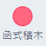
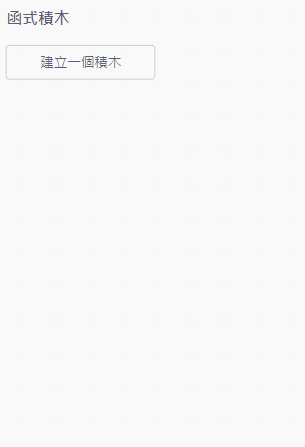
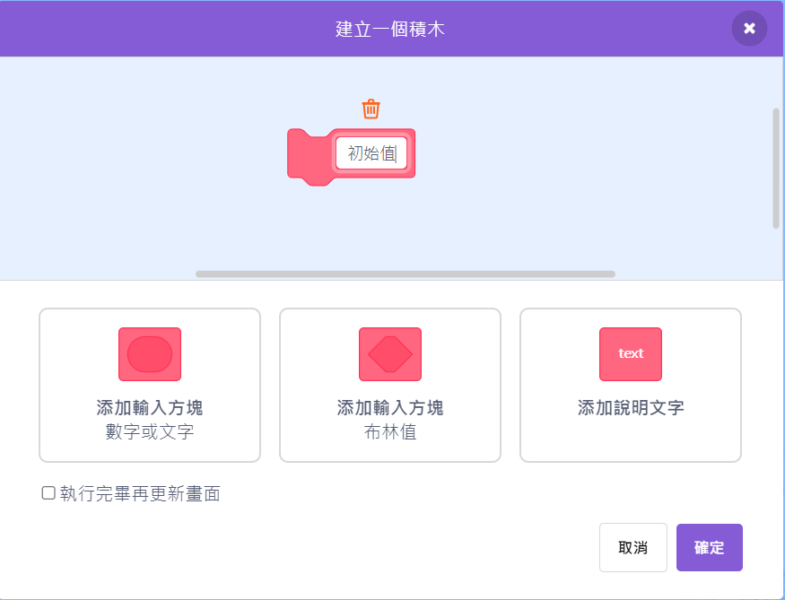

812第九組5號林柏廷的作業
老師好!!我是第九組的林柏廷
這是我的影片作業，請老師過目!!
以下是影片連結:
點擊觀看影片css技術支援:橘子蘋果程式學苑
為什麼要建立函式?
函式（Function）是程式設計中的基本單位。它是一段具名的程式碼，用來完成特定的任務或運算。透過函式，程式可以被模組化，提升可讀性與重複使用性。
建立函式的好處:
1. 重複使用: 函式可以被多次呼叫，避免重複撰寫相同的程式碼。
2. 模組化: 將程式碼分解成小的函式，有助於組織與管理程式。
3. 易於維護: 修改函式內的程式碼不會影響其他部分，只需更新函式本身。
4. 提升可讀性: 函式名稱可以描述其功能，使程式碼更易理解。
總結來說，函式是程式設計中不可或缺的工具，有助於提升程式的效率與品質。
以下我用JavaScript語言來示範建立函式:
function greet(name) {
return "Hello, " + name + "!";
}
console.log(greet("Alice")); // 輸出: Hello, Alice!
以下是建立函式的步驟:
接著我們用Scratch建立函式積木,按函式積木

按建立函式積木

輸入函式名稱

*布林值是指只有真(true)或假(false)兩種值的資料型態
按確定
以上是我的作業，謝謝老師的觀看!!